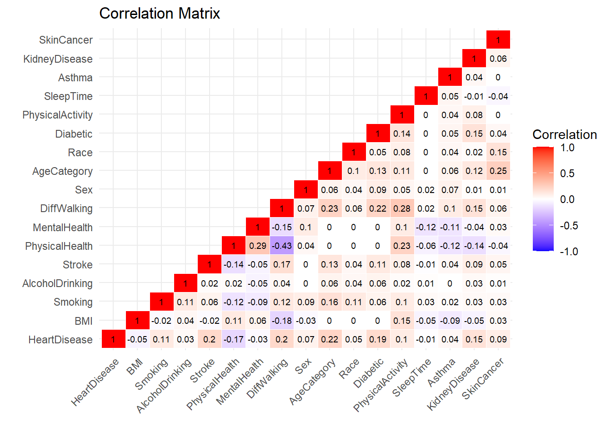
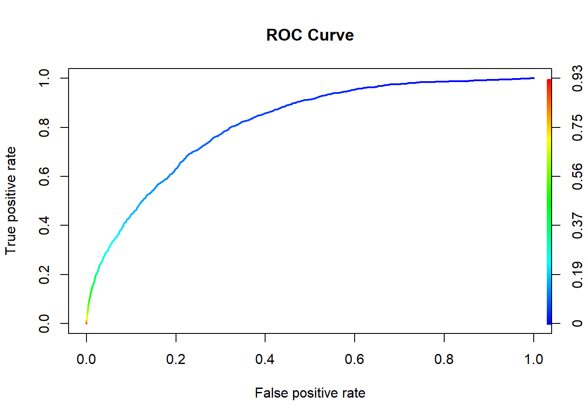

library(ltm)
library(psych)
library(sjstats)
correlation = function(var1, var2){
# check if variables are the same
if(var1 == var2){
return(1.0)
}
var1.name = var1
var2.name = var2
var1 = heart.df[[var1]]
var2 = heart.df[[var2]]
# get whether variables are "factor" or "numeric"
var1.class = class(var1)
var2.class = class(var2)
# if var is "factor", determine what kind of factor, i.e. "binomial"
if(var1.class == "factor"){
if(length(levels(var1)) == 2){
var1.class = "binomial"
}
}
if(var2.class == "factor"){
if(length(levels(var2)) == 2){
var2.class = "binomial"
}
}
# "numeric" & "numeric" correlation
if(var1.class == "numeric" & var2.class == "numeric"){
return(round(cor(var1, var2),2))
}
# "numeric" & "binomial" correlation
if((var1.class == "numeric" & var2.class == "binomial") | (var1.class == "binomial" & var2.class == "numeric")){
# swap var1 and var2 so that var1 is "numeric"
if(var1.class == "binomial"){
temp = var1
temp.class = var1.class
var1 = var2
var1.class = var2.class
var2 = temp
var2.class = temp.class
}
return(round(biserial.cor(var1, var2),2))
}
# "numeric" & "factor"
if((var1.class == "numeric" & var2.class == "factor") | (var1.class == "factor" & var2.class == "numeric")){
# swap var1 and var2 so that var1 is "numeric"
if(var1.class == "factor"){
temp = var1
temp.class = var1.class
var1 = var2
var1.class = var2.class
var2 = temp
var2.class = temp.class
}
anova = aov(var1 ~ var2)
return(round(summary(anova)[[1]][["Pr(>F)"]][1],2))
}
# binomial & binomial
if(var1.class == "binomial" & var2.class == "binomial"){
freq_table = table(var1, var2)
return(round(phi(freq_table),2))
}
# binomial & factor
if((var1.class == "binomial" & var2.class == "factor") | (var1.class == "factor" & var2.class == "binomial")){
freq_table = table(var1, var2)
return(round(cramer(freq_table),2))
}
# factor & factor
if(var1.class == "factor" & var2.class == "factor"){
freq_table = table(var1, var2)
return(round(cramer(freq_table),2))
}
return(NA)
}## Warning in matrix(data = correlations, nrow = dimensions, ncol = dimensions, :
## data length [324] is not a sub-multiple or multiple of the number of rows [17]
To attain a general understanding of how all the different variables relate to one another, we developed and executed a function that creates a correlation matrix for all of the variables. Due to the fact that we have several different types of variables (continuous, dichotomous, and non-dichotomous), we had to use several different types of correlation tests. For calculating the correlation between two continuous variables, we used Pearson’s correlation coefficient. For calculating the correlation between a continuous variable and a dichotomous variable, we used the point-biserial correlation coefficient. For a continuous and non-dichotomous variable, we had to use a one-way ANOVA \(\chi^2\) test to calculate a p-value to determine whether the variables are correlated. For the correlation between two dichotomous variables, we used the \(\phi\) correlation coefficient. Lastly, for the correlation between a dichotomous and non-dichotomous variable and the correlation between two non-dichotomous variables, we used Cramer’s V.
Based on our correlation matrix, we see that most of the variables have a weak or negligible correlation to the other variables. The exceptions to this is the correlation between DiffWalking and PhysicalHealth which has a low negative correlation of -0.43. These results indicate that we likely won’t experience any problems with multicollinearity since none of the variables are highly correlated. Additionally, this correlation matrix indicates that AgeCategory has the strongest correlation with HeartDisease while the other variables have mostly negligible correlations. Thus, AgeCategory is likely to be a more powerful predictor of HeartDisease than other variables.

Based on the ROC curve above, we see that the supposed optimal threshold for our logistic models should be around 0.01.
## Area under the curve: 0.8127## threshold specificity sensitivity
## 1 0.07745819 0.6770862 0.8027757We calculated the AUC to be 0.834, which is quite good since it’s decently close to 1. The calculated threshold is 0.083 which aligns with the ROC curve from above. However, we found that this threshold resulted in a misclassification rate of around 0.26. This is a very high error rate, and much higher than what results from a threshold of 0.5. Therefore, we will be using a threshold of 0.5, regardless of what the ROC curve suggests is optimal.
We constructed a full model with all the variables included to predict heart disease. We also created models with data only from certain levels removing the levels: Male, Female, Smoke, and No Smoke. We chose the variables of Sex and Smoking because we were curious whether these particular levels had any impact on predicting Heart Disease. First, we want to see which variables of each of these models were significant in predicting heart disease and the overall effectiveness of the model.
##
## Call:
## glm(formula = HeartDisease ~ . - 1, family = "binomial", data = heart.training)
##
## Deviance Residuals:
## Min 1Q Median 3Q Max
## -2.3160 -0.4334 -0.2753 -0.1413 3.4986
##
## Coefficients:
## Estimate Std. Error z value Pr(>|z|)
## BMI 0.0053007 0.0011539 4.594 4.35e-06 ***
## SmokingNo -5.5746872 0.1153822 -48.315 < 2e-16 ***
## SmokingYes -5.1551549 0.1155649 -44.608 < 2e-16 ***
## AlcoholDrinkingYes -0.3316721 0.0339552 -9.768 < 2e-16 ***
## StrokeYes 1.1912004 0.0229293 51.951 < 2e-16 ***
## PhysicalHealth 0.0195954 0.0007698 25.456 < 2e-16 ***
## MentalHealth 0.0075626 0.0008889 8.508 < 2e-16 ***
## DiffWalkingYes 0.5019729 0.0181650 27.634 < 2e-16 ***
## SexMale 0.6836247 0.0146632 46.622 < 2e-16 ***
## AgeCategory25-29 0.1620741 0.1272029 1.274 0.202614
## AgeCategory30-34 0.5485796 0.1135244 4.832 1.35e-06 ***
## AgeCategory35-39 0.6506505 0.1089476 5.972 2.34e-09 ***
## AgeCategory40-44 1.0527956 0.1026033 10.261 < 2e-16 ***
## AgeCategory45-49 1.3740203 0.0989929 13.880 < 2e-16 ***
## AgeCategory50-54 1.7764278 0.0956018 18.582 < 2e-16 ***
## AgeCategory55-59 2.0108040 0.0940943 21.370 < 2e-16 ***
## AgeCategory60 or older 2.7426808 0.0915817 29.948 < 2e-16 ***
## RaceAsian -0.5101898 0.0856830 -5.954 2.61e-09 ***
## RaceBlack -0.2695800 0.0593319 -4.544 5.53e-06 ***
## RaceHispanic -0.1830843 0.0604234 -3.030 0.002445 **
## RaceOther -0.0472344 0.0656788 -0.719 0.472035
## RaceWhite -0.0527703 0.0530598 -0.995 0.319958
## DiabeticNo, borderline diabetes 0.2357310 0.0423474 5.567 2.60e-08 ***
## DiabeticYes 0.6435812 0.0168686 38.153 < 2e-16 ***
## DiabeticYes (during pregnancy) 0.1758200 0.1052278 1.671 0.094751 .
## PhysicalActivityYes -0.1341662 0.0162210 -8.271 < 2e-16 ***
## SleepTime -0.0169990 0.0044303 -3.837 0.000125 ***
## AsthmaYes 0.3088846 0.0194780 15.858 < 2e-16 ***
## KidneyDiseaseYes 0.7347356 0.0247388 29.700 < 2e-16 ***
## SkinCancerYes 0.2499122 0.0193785 12.896 < 2e-16 ***
## ---
## Signif. codes: 0 '***' 0.001 '**' 0.01 '*' 0.05 '.' 0.1 ' ' 1
##
## (Dispersion parameter for binomial family taken to be 1)
##
## Null deviance: 421165 on 303806 degrees of freedom
## Residual deviance: 143059 on 303776 degrees of freedom
## AIC: 143119
##
## Number of Fisher Scoring iterations: 7## $Confusion_Matrix
## Predicted
## True No Yes
## No 14518 102
## Yes 1230 139
##
## $Misclassification_Rate
## [1] 0.08330727## GVIF Df GVIF^(1/(2*Df))
## BMI 24.042940 1 4.903360
## Smoking 280.176798 2 4.091269
## AlcoholDrinking 1.064948 1 1.031963
## Stroke 1.158662 1 1.076411
## PhysicalHealth 1.898754 1 1.377953
## MentalHealth 1.494155 1 1.222356
## DiffWalking 2.044143 1 1.429735
## Sex 2.472835 1 1.572525
## AgeCategory 191.236166 8 1.388667
## Race 59.817327 5 1.505507
## Diabetic 1.661450 3 1.088298
## PhysicalActivity 3.583092 1 1.892906
## SleepTime 21.260772 1 4.610940
## Asthma 1.261453 1 1.123144
## KidneyDisease 1.150724 1 1.072718
## SkinCancer 1.270353 1 1.127099The variables that are not statistically significant are AgeCategory 25-29, RaceOther, and RaceWhite of the significance level is at 0.1. The variable that is not statistically significant if the significance level is 0.05 DiabeticYes (during pregnancy). The variable that isn’t statistically significant if the significance level is 0.001 is RaceHispanic. The misclassification rate is 0.08330727 which means that the model is fairly accurate. BMI, Smoking, and SleepTime are the variables with the highest multicollinearity, but they are still lower than 5 or 10 meaning no action to amend the collinearity is necessary.
## Estimate Std. Error z value
## BMI 0.006959428 0.001489682 4.67175456
## AgeCategory25-29 0.059703079 0.170498483 0.35016780
## AgeCategory30-34 0.365536914 0.153238122 2.38541760
## RaceBlack -0.291037065 0.077063155 -3.77660461
## RaceHispanic -0.134971179 0.076810215 -1.75720350
## RaceOther 0.001808614 0.083982607 0.02153557
## RaceWhite -0.074589850 0.068603772 -1.08725582
## DiabeticYes (during pregnancy) -0.241266851 0.139906118 -1.72449107
## SleepTime -0.017378247 0.005746136 -3.02433644
## Pr(>|z|)
## BMI 2.986377e-06
## AgeCategory25-29 7.262128e-01
## AgeCategory30-34 1.705974e-02
## RaceBlack 1.589808e-04
## RaceHispanic 7.888313e-02
## RaceOther 9.828184e-01
## RaceWhite 2.769238e-01
## DiabeticYes (during pregnancy) 8.461923e-02
## SleepTime 2.491792e-03## GVIF Df GVIF^(1/(2*Df))
## BMI 23.530011 1 4.850774
## Smoking 277.090627 2 4.079956
## AlcoholDrinking 1.065648 1 1.032302
## Stroke 1.161518 1 1.077738
## PhysicalHealth 1.903658 1 1.379731
## MentalHealth 1.481831 1 1.217305
## DiffWalking 2.035424 1 1.426683
## AgeCategory 193.102431 8 1.389510
## Race 59.121105 5 1.503745
## Diabetic 1.660733 3 1.088220
## PhysicalActivity 3.541127 1 1.881788
## SleepTime 21.008158 1 4.583466
## Asthma 1.255527 1 1.120503
## KidneyDisease 1.150402 1 1.072568
## SkinCancer 1.269888 1 1.126893## $Confusion_Matrix
## Predicted
## True No Yes
## No 283743 1700
## Yes 24778 1878
##
## $Misclassification_Rate
## [1] 0.08483846The variables that are not statistically significant are RaceHispanic, Race Other, and Diabetic Yes (during pregnancy). Sleep time is statistically significant only if the significance level is 0.001. AgeCategory 25-29 and RaceBlack are statistically significant only if the level of significance is 0.05. RaceWhite and BMI are statistically significant only if the significance level is 0.01. SleepTime and Ages30-34 are statistically signifcant only if the level of significance is 0.001. The misclassification rate is 0.08456932 which means that the model is fairly accurate. BMI, Smoking, and SleepTime are the variables with the highest multicollinearity, but they are still lower than 5 or 10 meaning no action to amend the collinearity is necessary.
## Estimate Std. Error z value Pr(>|z|)
## AgeCategory25-29 0.21546550 0.165082139 1.3052018 0.191824142
## AgeCategory35-39 0.45779654 0.146704182 3.1205418 0.001805187
## RaceHispanic -0.16585358 0.081615084 -2.0321437 0.042139109
## RaceOther -0.04627917 0.089738262 -0.5157127 0.606055051
## RaceWhite -0.05163235 0.073252154 -0.7048578 0.480898732
## DiabeticYes (during pregnancy) -0.16744629 0.146249754 -1.1449338 0.252236577
## SleepTime -0.01298269 0.006127408 -2.1187905 0.034108176## GVIF Df GVIF^(1/(2*Df))
## BMI 23.183123 1 4.814886
## Smoking 266.054248 2 4.038709
## AlcoholDrinking 1.066255 1 1.032596
## Stroke 1.155668 1 1.075020
## PhysicalHealth 1.893208 1 1.375939
## MentalHealth 1.483949 1 1.218175
## DiffWalking 2.034946 1 1.426515
## AgeCategory 179.358240 8 1.383113
## Race 61.423676 5 1.509502
## Diabetic 1.659244 3 1.088057
## PhysicalActivity 3.554801 1 1.885418
## SleepTime 21.665905 1 4.654665
## Asthma 1.251559 1 1.118731
## KidneyDisease 1.152592 1 1.073589
## SkinCancer 1.261945 1 1.123363## $Confusion_Matrix
## Predicted
## True No Yes
## No 283106 1812
## Yes 24610 1974
##
## $Misclassification_Rate
## [1] 0.08482129The variables that are not statistically significant are AgeCategory25-29, RaceOther, RaceWhite, and DiabeticYes (during pregnancy). Sleep time and Race Hispanic are statistically significant only if the significance level is 0.01. Ages 35-39 is statistically significant only if the significance level is 0.001. The misclassification rate is 0.08456932 which means that the model is fairly accurate. BMI, Smoking, and SleepTime are the variables with the highest multicollinearity, but they are still lower than 5 or 10 meaning no action to amend the collinearity is necessary.
## Estimate Std. Error z value Pr(>|z|)
## DiffWalkingYes 0.5432635 0.02272321 23.907865 2.537009e-126
## AgeCategory25-29 0.3524377 0.16133441 2.184517 2.892430e-02
## RaceHispanic -0.2574145 0.07325513 -3.513946 4.415033e-04
## RaceOther -0.1090697 0.08045555 -1.355651 1.752101e-01
## RaceWhite -0.1306047 0.06505090 -2.007731 4.467190e-02
## DiabeticYes (during pregnancy) 0.1474092 0.13224272 1.114687 2.649847e-01## GVIF Df GVIF^(1/(2*Df))
## BMI 24.217959 1 4.921175
## AlcoholDrinking 283.712002 2 4.104114
## Stroke 1.155477 1 1.074931
## PhysicalHealth 1.900465 1 1.378573
## MentalHealth 1.481070 1 1.216992
## DiffWalking 2.053884 1 1.433138
## Sex 2.456940 1 1.567463
## AgeCategory 206.887922 8 1.395512
## Race 57.274661 5 1.498981
## Diabetic 1.671442 3 1.089386
## PhysicalActivity 3.557587 1 1.886157
## SleepTime 21.454973 1 4.631951
## Asthma 1.262247 1 1.123497
## KidneyDisease 1.151531 1 1.073094
## SkinCancer 1.265450 1 1.124922## $Confusion_Matrix
## Predicted
## True No Yes
## No 284695 1808
## Yes 24674 2058
##
## $Misclassification_Rate
## [1] 0.08454355The variables that are not statistically significant are BMI, AgeCategory 25-29, RaceOther, RaceWhite, and Diabetic Yes(during pregnancy) is the level of significance is 0.1. SleepTime is only statistically significant if the level of significance is 0.05. AgeCategory30-34 and RaceHispanic is statistically significant only if the significance level is 0.001.The misclassification rate is 0.08473544 which means that the model is fairly accurate. BMI, AlcoholDrinking, and SleepTime are the variables with the highest multicollinearity, but they are still lower than 5 or 10 meaning no action to amend the collinearity is necessary.
## Estimate Std. Error z value Pr(>|z|)
## SexMale 0.71332374 0.02119837 33.6499402 3.124214e-248
## AgeCategory25-29 0.12137331 0.17532789 0.6922647 4.887711e-01
## RaceBlack -0.30249178 0.08867072 -3.4114055 6.462890e-04
## RaceHispanic -0.26166325 0.08771128 -2.9832337 2.852201e-03
## RaceOther -0.04560093 0.09612895 -0.4743725 6.352343e-01
## DiabeticYes 0.61524919 0.02460570 25.0043309 5.485053e-138
## PhysicalActivityYes -0.17496303 0.02356908 -7.4234131 1.141400e-13## GVIF Df GVIF^(1/(2*Df))
## BMI 24.066593 1 4.905771
## AlcoholDrinking 249.531595 2 3.974490
## Stroke 1.161671 1 1.077809
## PhysicalHealth 1.890182 1 1.374839
## MentalHealth 1.495704 1 1.222990
## DiffWalking 2.033025 1 1.425842
## Sex 2.424500 1 1.557080
## AgeCategory 161.788531 8 1.374229
## Race 64.044602 5 1.515822
## Diabetic 1.654473 3 1.087535
## PhysicalActivity 3.561268 1 1.887132
## SleepTime 21.214586 1 4.605929
## Asthma 1.263642 1 1.124118
## KidneyDisease 1.151567 1 1.073111
## SkinCancer 1.271841 1 1.127759## $Confusion_Matrix
## Predicted
## True No Yes
## No 281811 2047
## Yes 24252 2256
##
## $Misclassification_Rate
## [1] 0.08473544The variables that are not statistically significant are AgeCategory 25-29, RaceOther, RaceWhite, and DiabeticYes (during pregnancy) if the level of significance is 0.1. MentalHealth and RaceHispanic are statistically significant if the level of significance is 0.01. The misclassification rate is 0.08475112 which means that the model is fairly accurate. BMI, AlcoholDrinking, and SleepTime are the variables with the highest multicollinearity, but they are still lower than 5 or 10 meaning no action to amend the collinearity is necessary.
All models were effective at predicting Heart Disease with different variables being statistically significant at different levels.
But which models where the best at predicting Heart Disease? And how did the statistical significance of variables change between the models? How do naturally paired models compare to each other.
The Misclassification error rates only had slight differences between the all the models and all were similarly effective at prediction. Also when comparing AIC, the order of largest to smallest AIC’s are log.reg.stroke, log.reg.full, log.reg.non.stroke, log.reg.smoker,log.reg.no.female,log.reg.no.male, and log.reg.non.smoker. This means that the model where the non smokers were removed from the data set had the best fit model by AIC. This doesn’t mean that we reccomend the data set remove all non-smokers from their data sets, but rather that a model with all smokers have the most explanatory power when trying to model predictor variables and heart disease. It seems that whether people are smoking or not effects the model greatly according to AIC. The full model has one of the highest AIC’s compared to the other models which might indicate that the model predictor variables might be confounding variables. As when only giving data from a certain level improves the predictive power of the model. But, in the Full model, there are less variables that are statistically insignificant.
When comparing the different variables’s statistical significance when predicting Heart Disease many of the variables have had a lot of consistency. Most variables remain statistically significant abnd do not deviate between the models. Certain notable changes are as follows. Ages25-29, RaceOther, RaceWhite,DiabeticYes (while pregnant) and BMI consistently have really low statistical significance across all models. RaceHispanic, Sleeptime ,Ages 30-34 ,and Ages 35-39 intermittenly lose very high statistical significance. MentalHealth only loses statistical significance in the non-smoker only model. Alcohol drinking loses statistical significance in the non-stroke model only. PhysicalActiveYes loses statistical significance in the non-stroke only model. BMI, Smoking, and SleepTime are the variables with the highest multicollinearity, but they are still lower than 5 or 10 across all models.
Males and Female models had similar AIC’s and had the mostly the same variables that where less statistically significant and of the same level of significance. They had a similar misclassifcation error rate as well. The models of the two sexes do not vary much from each other meaning their predictive power when looking at development of heart disease is roughly equal.
Smoker and non-smoker models had the mostly the same variables that where less statistically significant and of the same level of significance. They had a similar misclassifcation error rate as well. The AIC of model with smokers has a much smaller AIC than the model with non-smokers. This means that the data at smokers are a better fit at predicting Heart Disease than the data of non-smokers. So, whether someone smokes or doesn’t, has an effect on the predictive power of the model and may be a confounding variable. This paired with multicollinearity of smoking/nonsmoking variable may indicate multicollinearity.
It is possible to build a predictive model of Heart Disease using logistic regression, we observed certain variables with higher significance when running logistic regression on the full model along with specific subsets of the model (ie. Smoke and Sex). We notice that when subsetting the data to control for different variables, we have a significant impact on certain variables compared to the full model. Most of the controlled data models had lower AICS than the full models. And these models also had more statistically insignificant variables. This means that amongst these given variables, variables were less predictive of Heart Disease. The variables that seem to have the greatest changes between models are RaceHispanic, Sleeptime, Ages 30-34, and Ages 35-39. And other variables seem to have no impact across all models such as Ages 25-29 and Diabetic while pregnant. RaceOther and RaceWhite are all statistically insignificant in all models except the full models. This might mean that these variables have different effects in HeartDisease given other factors and may not be as strong predictors of Heart Disease as we believed. The variables of the subsetted models had much more variables that were less predictive of heart disease.